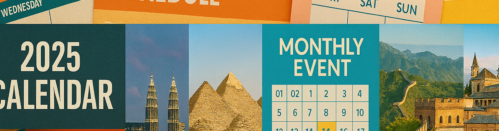

Programa Completo de Actividades
TravelBIRTLH 2025 ofrece un programa completo de actividades diseñado para profesionales del turismo, agencias de viajes y viajeros entusiastas. Durante tres días intensivos, podrás participar en conferencias magistrales, talleres prácticos y eventos de networking.
Información General
- Duración: 3 días (15, 16 y 17 de marzo de 2024)
- Horario general: 15:00 - 19:00 horas
- Idiomas: Español, inglés, francés y alemán (traducción simultánea)
Viernes 15 de Marzo - Día 1: Inauguración y Tendencias
| Hora | Actividad | Ponente/Organización | Sala |
|---|---|---|---|
| 15:00 - 16:30 | Mesa Redonda: "Tecnología en el Sector Turístico" | CEOs de Startups Turísticas | Sala A |
| 16:30 - 17:00 | Pausa para Café | - | Hall Central |
| 17:00 - 18:00 | Taller: "Fotografía de Viajes para Redes Sociales" | Laura Pérez (Influencer) | Sala C |
| 18:00 - 19:00 | Cóctel de Bienvenida | - | Terraza Principal |
Sábado 16 de Marzo - Día 2: Destinos y Experiencias
| Hora | Actividad | Ponente/Organización | Sala |
|---|---|---|---|
| 15:00 - 16:00 | Conferencia: "Américas: Diversidad sin Límites" | Ministros de Turismo | Auditorio Principal |
| 16:00 - 17:00 | Taller: "Turismo Gastronómico Mundial" | Chef Internacional | Sala A |
| 17:00 - 17:30 | Pausa para Café | - | Hall Central |
| 17:30 - 18:30 | Mesa Redonda: "Viajes en Familia: Tendencias y Consejos" | Expertos en Turismo Familiar | Sala B |
| 18:30 - 19:30 | Espectáculo Cultural Internacional | Artistas Invitados | Escenario Principal |
Domingo 17 de Marzo - Día 3: Innovación y Clausura
| Hora | Actividad | Ponente/Organización | Sala |
|---|---|---|---|
| 15:00 - 16:00 | Premios TravelExpo 2024 | Jurado Internacional | Auditorio Principal |
| 16:00 - 17:00 | Mesa Redonda: "Lecciones Aprendidas y Perspectivas" | Ponentes Principales | Auditorio Principal |
| 17:00 - 18:00 | Ceremonia de Clausura | Comité Organizador | Auditorio Principal |
| 18:00 - 19:00 | Cóctel de Despedida | - | Terraza Principal |
Actividades Especiales
Zona de Experiencias Inmersivas
Durante los tres días, los visitantes podrán disfrutar de:
- Realidad Virtual: Recorridos virtuales por destinos exóticos
- Degustaciones: Sabores del mundo en nuestro espacio gastronómico
- Fotocall Temático: Escenarios de destinos famosos para fotos
Información Práctica para Asistentes
- Registro: Obligatorio para todas las actividades
- Capacidad limitada: Las conferencias tienen aforo limitado
- Material: Se proporcionará material de apoyo digital
¿Cómo Registrarse?
El registro para las conferencias es gratuito pero obligatorio debido al aforo limitado:
- Completa el formulario de registro general en nuestra página de contacto
- Recibirás confirmación por correo electrónico
- Presenta tu confirmación en el mostrador de registro el día del evento